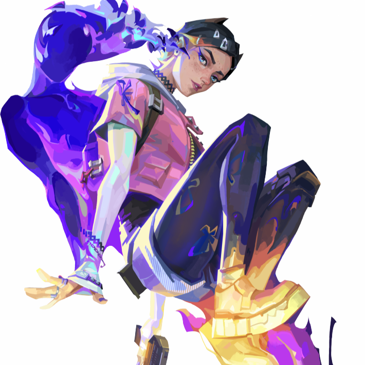

クローブ

国籍: スコットランド
ロール: 不明
スコットランド出身のトラブルメーカー「クローヴ」は、激しい戦闘の最中も、冷たい死を迎えたときすらも敵に悪戯を仕掛ける。若き不死の存在であるクローヴは、死の向こう側からでさえ敵に疑念を抱かせ翻弄する。生ける世界への帰還はいつもほんの一瞬のことだから。
公式トレーラー
スキル
| スキル名 | 値段 | 所持上限 | 説明 |
|---|---|---|---|
| メドル (Q) | 250 | 1個 | 不死のエッセンスの欠片を構える。「発射」で欠片を投げる。欠片は少ししてから爆発し、範囲内のすべての対象に一時的に「衰弱」効果を付与する。使いやすく強力なスキルだが、フレンドリファイアが有効なスキル。範囲内にいる敵だけでなく味方や自分にも衰弱が付与されるので、使い方を間違えると敵が有利になってしまう点には注意。 |
| ルース (E) | 無料 | 1個 | マップを表示し、「発射」でクローヴの煙幕の発生地点を指定する。「オルト射撃」で位置を確定し、煙幕を発生させる。煙幕は指定した地点の視線を遮る。 |
| ピック・ミー・アップ (C) | 200 | 1個 | クローヴがキルまたは事前にダメージを与えていた、倒れた敵から生命力を吸収する。移動速度が増し、一時的に増加体力を得る。 オーバーヒールは最大100増加体力はレイナのデバウアーと同じ様な効果で、HP100を超過した回復はアーマーになる。ただし、効果時間は11秒と短めで、効果が終わると回復した体力も元に戻る。 |
| ノット・デッド・イェット (X) アルティメット | - | 1個 | 倒された後に「発動」すると復活する。復活後、一定時間内にキルを奪うかダメージアシストを行わなければ、クローヴはデスする。 |
立ち回りとおすすめマップ
攻撃側：デュエリストとペアで行動する
攻撃側のクローヴは、敵がエントリーポイントに射線を通しやすい「強ポジ」をスモークで潰しつつ、デュエリストと共にサイト侵攻して「メドル」でキルサポートをしつつ「ピック・ミー・アップ」で自分でもキルを狙う立ち回りが基本となる。特に、クローヴは自己回復と自己蘇生によって前衛性能が高いため、他のコントローラーのように後方に位置していると性能を十全に発揮することができないので注意が必要。また、コントローラーの中では撃ち合い性能が高い反面、ブリムストーンやヴァイパーのようにスキルでスパイク解除妨害は行えない点は把握しておこう。
防衛側：スモークで遅延と情報封鎖を行う
防衛側のクローヴは、ミッドやサイト入り口に「ルース」でスモークを設置することで敵の侵攻を抑え、敵がラッシュを仕掛けてきた場合は「メドル」でカウンターを狙う立ち回りが基本となる。特に「ルース」は30秒でリチャージされるため、スモークを継続的に展開することで敵の侵攻を大幅に抑制することが可能。